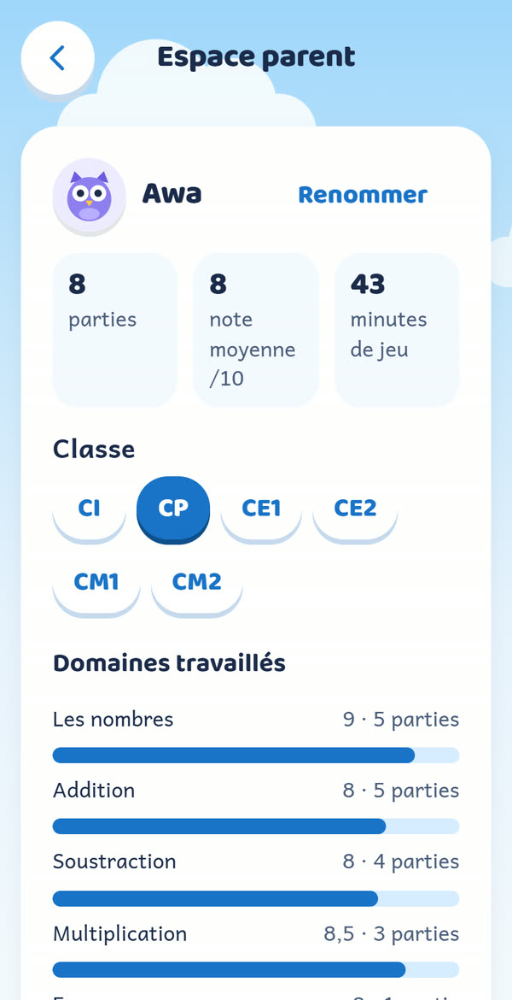
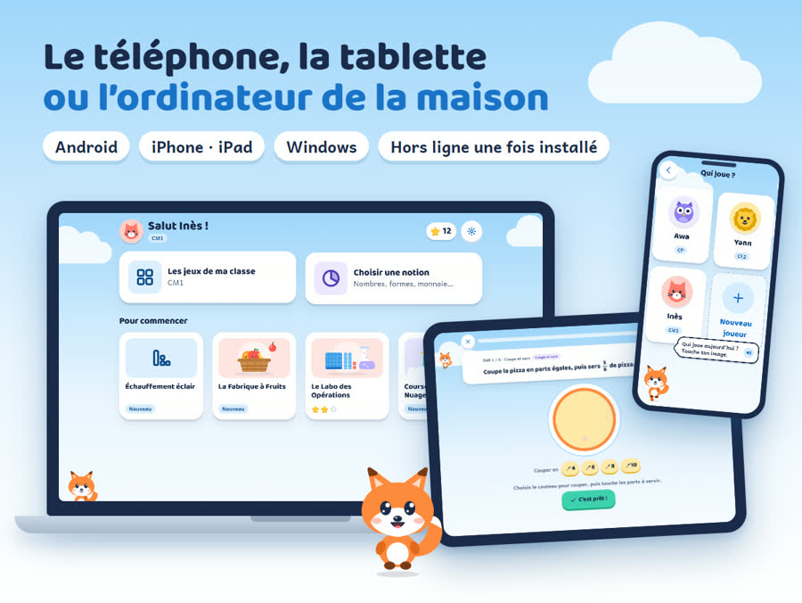

Toujours un défi à sa hauteur
Le mode « Plus dur », ou directement les jeux de la classe au-dessus.
Du CI au CM2 · marche sans internet · 4 900 F une seule fois
30 jeux et plus de 80 activités pour compter, calculer, rendre la monnaie en francs CFA, lire l’heure et réussir ses tables. En manipulant, en jouant, en voyant pourquoi c’est juste.
Pour les enfants qui détestent les maths, qui oublient leurs tables, ou qui ont besoin de voir pour comprendre.
Sans inscription · 6 jeux ouverts tout de suite · sans internet après installation
Ce n’est pas qu’il est nul en maths. C’est qu’on lui a demandé de réciter avant de comprendre.
À l’école, on va vite. À la maison, on n’a pas toujours le temps d’expliquer autrement. Résultat : il récite, il stresse, il oublie.
Math Adventure fait l’inverse.
Alors ce n’est pas pour rattraper. C’est pour aller plus loin. Un enfant bon qui s’ennuie finit par détester l’école : ici, il n’attend jamais.
Le mode « Plus dur », ou directement les jeux de la classe au-dessus.
Ses tables en 2 secondes, même sous pression : le Dojo et la Course dans les Nuages sont faits pour la vitesse et le record à battre.
C’est l’amour des maths qui tient quand ça devient dur.
Il n’a pas besoin d’aide. Il a besoin d’un vrai défi.
Essayer 6 jeux gratuitementIl remplit des paniers de fruits, déplace des blocs de dizaines, paie avec de vraies pièces en francs CFA. Il touche les maths.
Il voit pourquoi le résultat est juste. 12 × 23, il le voit avec des lignes qui se croisent, pas avec une formule à apprendre.
Le jeu retient ce qu’il a raté et le lui refait faire plus souvent, jusqu’à ce que ce soit automatique. Sans punition, sans stress.
Quand on comprend, on n’a plus besoin de réciter par cœur.
Ces 6 jeux sont ouverts en entier, sans inscription. Donnez le téléphone à votre enfant, et regardez-le jouer. Vous verrez tout de suite s’il comprend ou s’il récite.
CE1 → CM2 · contre Tim
S’il aime gagner : lancez-lui le défi contre Tim.
Pour prendre une case, il faut trouver le résultat. Et sur la case qui fait gagner, c’est le calcul le plus dur.
JouerCI → CM2 · pour commencer
S’il est en CI, CP ou CE1 : commencez par celui-ci.
Remplir les paniers, former des groupes, compter : l’enfant voit ce que veut dire « 3 + 2 » avant de l’écrire.
JouerCE1 → CM2 · les tables
S’il oublie ses tables : essayez celui-ci.
« Mes tables » retient chaque calcul raté et le refait revenir plus souvent, jusqu’à ce qu’il soit su par cœur.
JouerCI → CM2 · calcul mental
S’il est lent en calcul : essayez celui-ci.
Courir, sauter, glisser… et passer par la porte de la bonne réponse. Le calcul mental devient un réflexe.
JouerCI → CE2 · premiers calculs
S’il ne tient pas en place : un calcul, un saut.
La lave monte : l’enfant saute sur la dalle du bon résultat pour sortir du volcan.
JouerÀ deux sur le même écran · en famille
Pour jouer avec lui ce soir.
Chaque bonne réponse tire la corde de son côté. Frères, sœurs, cousins… ou vous contre votre enfant.
JouerLe jeu s’ouvre dans votre navigateur. Les autres jeux s’y affichent avec un cadenas : ils se débloquent avec la version complète.
Pas besoin de chercher dans une longue liste. Voici ce qui l’attend.
CI · CP
Jeu clé : La Fabrique à Fruits
CE1 · CE2
Jeu clé : Le Dojo des Tables
CM1 · CM2
Jeu clé : Le Petit Marché
12 × 23 avec des lignes qui se croisent, des blocs pour les dizaines, des opérations posées pas à pas. Votre enfant voit pourquoi le résultat est juste.
Payer 800 F avec les bonnes pièces, rendre la monnaie, lire l’heure, mesurer : des situations qu’il retrouve au marché et à la maison. Pas des exemples de livres français.
Tim le renard explique, encourage, et montre la solution quand l’enfant bloque. Il peut essayer, se tromper, recommencer, sans honte.

L’espace parent montre les notes de chaque enfant, notion par notion. Vous savez exactement où il est fort, et où il bloque. Sans deviner. Sans attendre le bulletin.

Un paiement unique. Disponible à vie. Aucun abonnement.
Spécial Black Friday jusqu’au . Ensuite, la version complète passe à .
Les 6 jeux d’essai, eux, restent gratuits.
Pas le temps maintenant ? Recevez le lien sur WhatsApp pour y revenir plus tard.
Si votre enfant n’accroche pas pendant l’essai gratuit, ne payez pas. C’est pour ça qu’il y a 6 jeux ouverts : vous ne payez qu’après avoir vu qu’il aime et qu’il comprend.
Seulement pour installer l’appli et activer la clé, une fois, quelques secondes. Ensuite tout marche en mode avion : aucun forfait consommé.
Téléphones Android, iPhone, iPad et ordinateurs Windows. Une clé s’active sur 4 appareils : par exemple le téléphone de maman, celui de papa, la tablette et l’ordinateur.
Non. Chaque enfant crée son profil avec son prénom et sa classe, et chacun garde ses notes. Il n’y a pas de limite d’enfants.
Tim le renard lit les consignes à voix haute, et les écrans se comprennent avec les images. Commencez par La Fabrique à Fruits dans l’essai gratuit.
Non, ça complète. 15 minutes par jour suffisent pour débloquer ce qui bloque à l’école. C’est l’entraînement qui fait comprendre, pas un cours de plus.
Non. Chaque jeu a un objectif précis : une table, une notion, une compétence. Il joue, mais il travaille exactement ce qu’il apprend en classe.
Activez simplement la clé sur le nouveau téléphone : elle compte 4 appareils. Si les 4 sont déjà utilisés, écrivez-nous sur WhatsApp avec votre clé et on trouve une solution.
Vous remplissez le formulaire, puis vous payez sur la page sécurisée de Chariow (Mobile Money selon votre pays : MTN, Moov, Celtiis… ou carte bancaire). C’est un paiement unique : rien ne sera prélevé ensuite.
Essayez 6 jeux gratuitement. Laissez-le jouer 10 minutes. Vous verrez la différence.
Essayer gratuitement